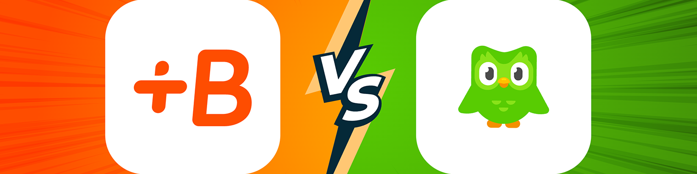
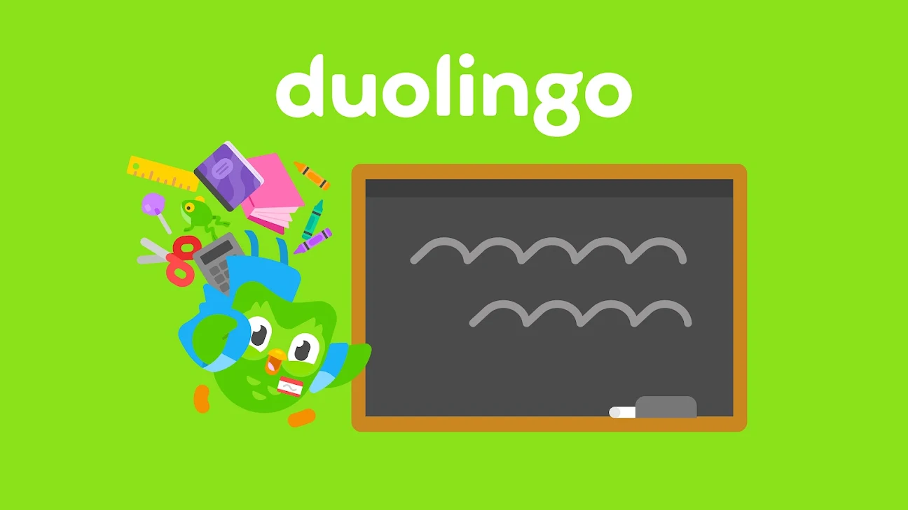
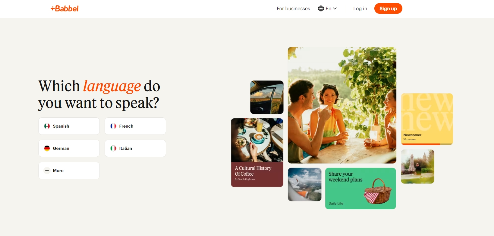
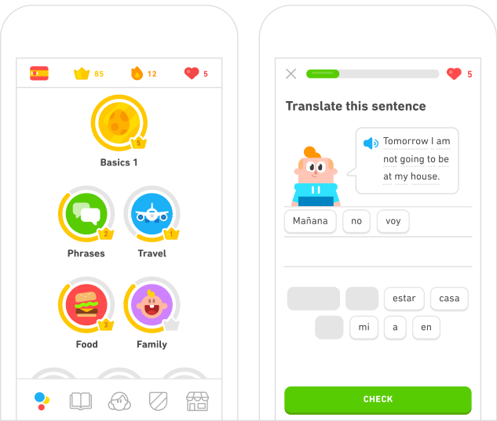
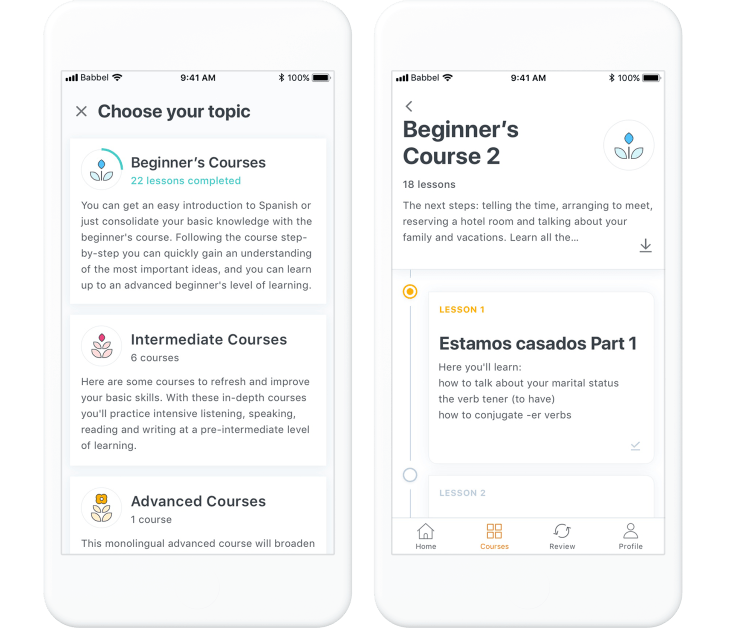
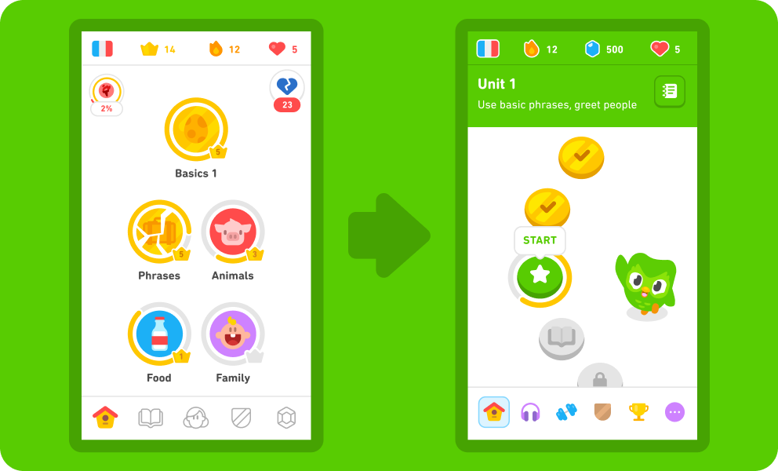
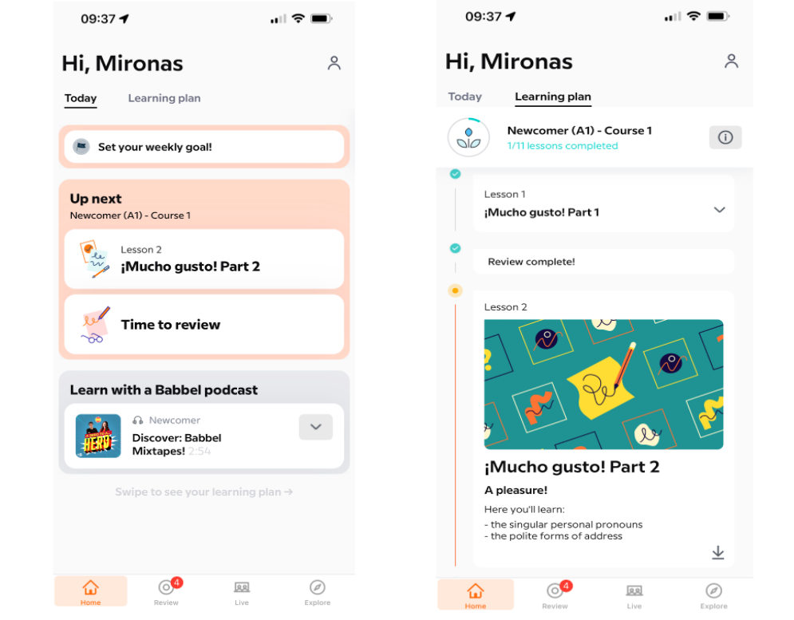
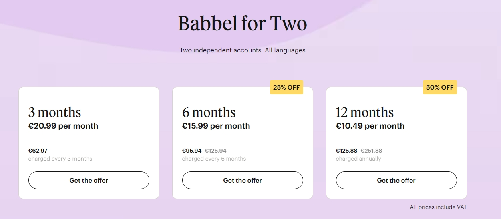

Duolingo 與 Babbel：哪個更好？
選擇合適的語言學習應用可能是一個艱難的決定，尤其是在像 Duolingo 和 Babbel 這樣備受歡迎的應用面前。這兩款應用都提供了獨特的功能和優勢，但在共享訂閱方面，它們又如何呢？
在這篇博文中，我們將對 Duolingo 和 Babbel 進行全面比較，重點關注它們的功能、用戶體驗，以及最重要的，它們是否適合共享訂閱。無論你是想與親友好朋分攤費用，還是只想確保獲得最佳性價比，請繼續閱讀，探索哪款應用最適合你。
特色和課程內容比較
Duolingo 和 Babbel 的綜合功能
在比較語言學習應用程序時，了解它們的功能和課程內容至關重要。讓我們分析一下 Duolingo 和 Babbel 的關鍵方面，看看它們如何滿足不同的學習需求。
Duolingo：遊戲化的學習體驗
Duolingo 以其遊戲化的語言學習方式而聞名，讓學習過程既有趣又引人入勝。主要功能包括：
- 互動課程 ：Duolingo 結合閱讀、寫作、聽力和口語練習來吸引學習者的注意力。
- 類似遊戲的結構 ：應用程序的結構包括級別、積分和獎勵，激勵用戶繼續學習。
- 多樣化的語言選擇 ：Duolingo 提供超過 38 種語言的課程，包括西班牙語、法語、日語和德語等熱門語言，以及愛爾蘭語和威爾士語等不太常見的語言。
- 免費訪問 ：Duolingo 提供大量免費內容，並可通過 Super Duolingo 提供可選的高級功能，提供無廣告體驗和離線訪問。
Babbel：結構化專業課程
另一方面，Babbel 專注於提供由專家設計的結構化專業語言課程。主要功能包括：
- 專業課程設計 ：Babbel 的課程由語言專家開發，注重實用的會話技巧。
- 現實生活背景 ：課程圍繞現實生活情況設計，幫助用戶將所學知識應用到實際環境中。
- 多樣化的學習活動 ：Babbel 包含語法練習、詞彙構建和語音識別，以提高發音。
- 基於訂閱的模式 ：Babbel 以訂閱方式運營，提供各種計劃，可訪問平台上的所有課程和語言。
課程內容和教學方法
Duolingo：簡短課程
Duolingo 的課程內容被分解成易於管理的小課，方便用戶融入日常生活。每節課都側重於特定技能，並循序漸進地提升語言能力。該應用的自適應學習算法能夠識別學習者需要更多練習的領域，從而提供個性化的學習體驗。
Babbel：深入模塊
Babbel 的課程分為多個模塊，涵蓋語言學習的不同方面，例如語法、詞彙和文化見解。每個模塊都旨在幫助學習者更深入地學習語言，並重點強調會話技巧和實際運用。Babbel 還提供復習課程，以鞏固學習並確保學生記住所學內容。
用戶界面和體驗
Duolingo：用戶友好且引人入勝
Duolingo 的界面色彩豐富、直觀易用，吸引了各個年齡段的用戶。該應用的遊戲化元素，例如連勝和排行榜，增加了競爭優勢，鼓勵用戶定期練習。
Babbel：專業且簡潔的設計
Babbel 的界面簡潔專業，體現了其致力於提供結構化學習體驗的理念。該應用操作簡便，課程和模塊的進度清晰，非常適合偏愛傳統學習方式的學習者。
總而言之，Duolingo 和 Babbel 都提供了強大的語言學習功能，但它們迎合了不同的偏好和學習風格。Duolingo 的遊戲化、小巧的課程非常適合那些尋求有趣且靈活學習體驗的人。相比之下，Babbel 專業設計的課程和真實的情境則非常適合尋求更有條理的學習方法的學習者。 了解這些差異可以幫助你為語言學習之旅選擇合適的應用程序。
定價和訂閱計劃選項
選擇語言學習應用時，了解定價和訂閱選項至關重要。以下是根據最新信息詳細介紹 Duolingo 和 Babbel 的成本結構。
Duolingo：靈活且價格實惠
Duolingo 提供多種定價選項，以滿足不同的需求和預算：
- 免費版本 ：Duolingo 提供大部分免費語言課程。免費版本包含廣告，但包含學習新語言所需的所有基本功能。
- Super Duolingo ：如果你追求無廣告體驗和更多功能，Super Duolingo 是你的理想之選。按年訂閱，每月費用為 7.49 歐元，提供離線訪問、進度跟踪和無限愛心(允許在課程中犯更多錯誤)等福利。
- 超級家庭 ：Duolingo 的家庭套餐 最多允許六位成員共享一個訂閱 。按年計費，每月價格為 10.24 歐元，提供超級 Duolingo 的所有功能，是家庭或團體的絕佳選擇。
Babbel：基於訂閱的模式
Babbel 採用訂閱模式，用戶可以訪問其全套功能和課程：
- 每月訂閱：Babbel 提供 每月 16.99 歐元的按月計劃，為不想長期訂閱的用戶提供靈活性。
- 季度訂閱 ：三個月的計劃費用為每月 12.99 歐元，對於計劃長期學習的用戶來說，這是一個更具成本效益的選擇。
- 半年訂閱 ：六個月的計劃費用為每月 9.99 歐元，為承諾學習半年的用戶提供大幅折扣。
- 年度訂閱：Babbel 的年度訂閱計劃價格為 每月 6.99 歐元，性價比最高。該計劃非常適合那些致力於長期精通一門語言的專注學習者。
- 終身訂閱 ：Babbel 還提供一次性付款選項，只需299.99 歐元即可終身訪問所有語言，為忠實的學習者提供最佳的長期價值。
共享訂閱權益
Duolingo 的超級家庭計劃專為共享訂閱而設計 ，最多可容納六位家庭成員一起學習。超級家庭計劃包含六個賬戶，每月 10.24 歐元，按年計費，每人每月約 1.71 歐元。每位成員都擁有自己的賬戶，確保個性化的學習體驗，同時享受共享訂閱模式的益處。
Babbel 目前不提供專門的家庭計劃，但他們提供共享訪問的選項：
Babbel 雙人版 ：此訂閱允許兩位用戶使用不同的帳戶共享所有可用語言的訪問權限。每位用戶可以按照自己的節奏學習，並根據需要選擇不同的語言。
在比較 Duolingo 和 Babbel 的性價比時，需要考慮幾個因素。Duolingo 功能強大的免費版本以及價格實惠的超級 Duolingo 和超級家庭套餐，使其成為尋求經濟實惠的語言學習工具的個人或家庭的理想選擇。 另一方面，Babbel 的結構化課程和專業設計，加上 Babbel for Two 等選項，為尋求全面學習體驗的用戶提供了巨大的價值，儘管與 Duolingo 的家庭套餐相比，其單位用戶成本更高。
總而言之，Duolingo 和 Babbel 都提供滿足不同需求和預算的定價結構。Duolingo 的低成本"超級 Duolingo"和"超級家庭"套餐靈活且價格實惠 ，而 Babbel 的各種訂閱計劃則提供結構化且專業的學習體驗。了解這些選項可以幫助你做出明智的決定，並最大限度地提高你在語言學習上的投資價值。
針對不同學習者的建議
在 Duolingo 和 Babbel 之間進行選擇時，請考慮你的學習風格、目標和偏好。以下是一些建議，可以幫助不同類型的學習者決定哪款應用最適合你。
- 普通學習者和初學者
Duolingo 是初學者和休閒學習者的理想之選。其遊戲化的短小課程讓學習充滿樂趣，輕鬆融入繁忙的日程安排。免費版本提供豐富的內容，而超級 Duolingo 訂閱則提供離線訪問和無廣告的體驗。
- 家庭和團體
Duolingo 的超級家庭套餐 非常適合家庭和團體使用。它允許最多六位成員共享一個訂閱，經濟實惠。每位成員都有自己的賬戶，確保個性化學習。
- 重視靈活性的學習者
Duolingo 的免費版本 和 價格實惠的 Super Duolingo 訂閱服務為想要學習多種語言或在多種語言之間切換的學習者提供了靈活性。Super Family 套餐則讓多名用戶以更低的價格享受高級功能，進一步提升了其價值。
- 認真學習者和目標導向型個人
Babbel 的結構化課程 由語言專家設計，注重實用的會話技巧和語法。這種方法對認真學習者和有特定語言目標的人非常有益。Duolingo 的 Super Duolingo 和 Super Family 計劃 也為認真學習者提供個性化練習和進度跟踪等功能。
- 專業人士和學術學習者
Babbel 專注於實用的會話技巧，適合專業用途和學術學習。Duolingo擁有廣泛的語言選項和靈活的學習方法，也為專業人士和學者提供服務，並通過其 Super Duolingo 和 Super Family 套餐提供離線訪問 。
- 送禮者和共享訂閱
Duolingo 的超級家庭計劃 是一份絕佳的禮物，最多可容納六位成員，享受個性化的學習體驗。對於家人和朋友來說，這是一份珍貴而貼心的禮物。
結論
Duolingo 和 Babbel 都是優秀的語言學習應用，各有優勢。Duolingo 以其免費和遊戲化的方式脫穎而出，非常適合休閒學習者、初學者和家庭用戶。其超級 Duolingo 和超級家庭套餐提供價格實惠且靈活的選擇，允許多名用戶同時享受高級功能。而 Babbel 則提供由語言專家設計的結構化課程，注重實用的會話技巧和語法，非常適合認真學習者和尋求深入語言技能的專業人士。
準備好和家人朋友一起開啟語言學習之旅了嗎？探索 Duolingo 超級家庭計劃的精彩，立即在 環球巴士 開啟你的共享訂閱吧!